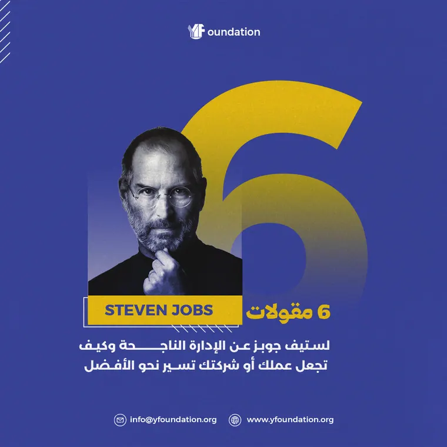
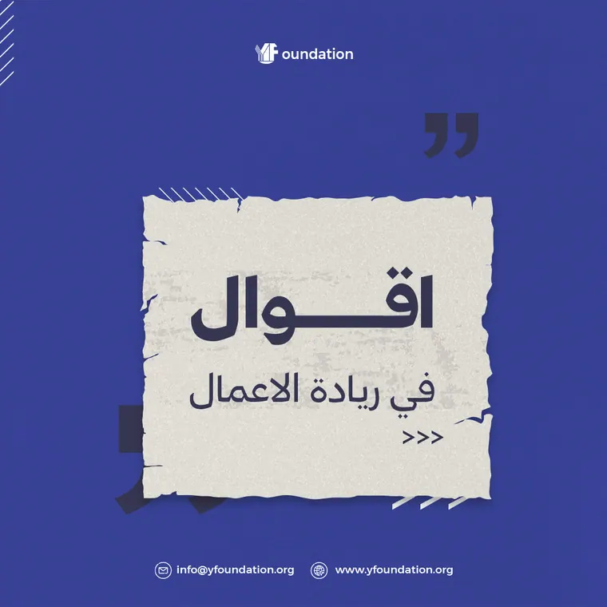
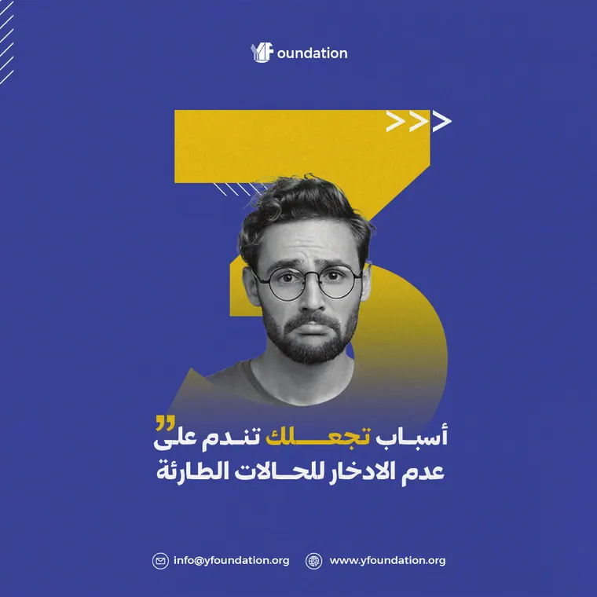
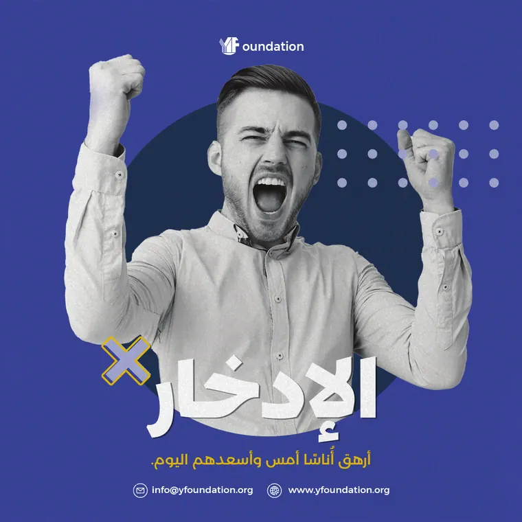

Y Foundation
Bold type, one idea per post.
A social series for Y Foundation on entrepreneurship and saving: quotes, tips and founder stories in a deep indigo and gold palette, with one big headline per post.
- Client
- Y Foundation
- Role
- Campaign design
- Scope
- 4 social posts
One big idea per post.
- The objective
- Help young people build better habits in entrepreneurship and saving.
- The idea
- One number or one word per post, understood in the second it takes to scroll.
- Visual direction
- Deep indigo and golden yellow, cut-out portraits and oversized numerals.



